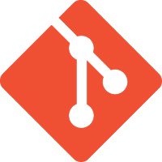
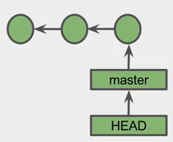
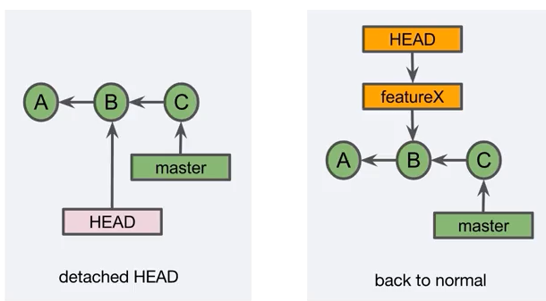
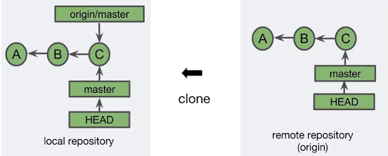

Hoy en día el software es un elemento muy importante en nuestra sociedad, y podemos decir que se encuentra presente en muchos de los productos y servicios que utilizamos cada día.
Multitud de dispositivos que nos rodean nos facilitan el trabajo en cualquier ámbito de nuestra vida (ocio, transportes..), y lo más probable es que lleve instalado algún tipo de software de control.
Es por ello, que los profesionales del desarrollo de software necesitan conocer y dominar un determinado tipo de herramientas las cuales permite controlar y gestionar de una manera organizada y
realmente potente el desarrollo, evolución y mantenimiento de cualquier producto o servicio en cuyo corazón se ejecuten instrucciones de control.
Una característica importante que marca la diferencia de Git con respecto a otras herramientas del mismo propósito es que se trata de un sistema de control de versiones distribuido, lo que significa
que cada componente del equipo tiene un copia local de la historia completa de proyecto, pudiendo trabajar "offline" y posteriormente sincronizar los cambios al repositorio base que contiene
la versión final, la cual se ubica en datacenters o en la nube.

GITHUB
Es un portal de tipo social y colaborativo para soportar el desarrollo de software libre y comercial. En esta plataforma se gestionan grandes proyectos de software libre.
Además, Github no sirve solamente para gestionar el desarrollo de software en equipo, si que permite el distribuir a terceros dicho software, ya que los proyectos públicos son accesibles por cualquiera
y muestran toda la estructura del proyecto (versiones, cambios generados, ramas, contribuidores).
Head es una referencia que apunta al commit actual en el que estamos ubicados dentro del árbol del proyecto. Normalmente apunta a la cabeza de una determinada rama,
existiendo solamente una referencia Head por cada repositorio.


RAMA TRACKING
Una tracking branch, es una rama local que representa una rama en un repositorio remoto.
Se representa mediante el nombre del remoto + "/" + el nombre de la rama (p.e. origin/master).
Las ramas remotas tracking solamente se sincronizan con sus ramas a las que representan del repositorio remoto,
cuando se ejecutan comandos de red como git clone, git fetch, git pull y git push.

Estudiar, Analizar, Aprender